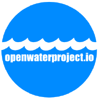
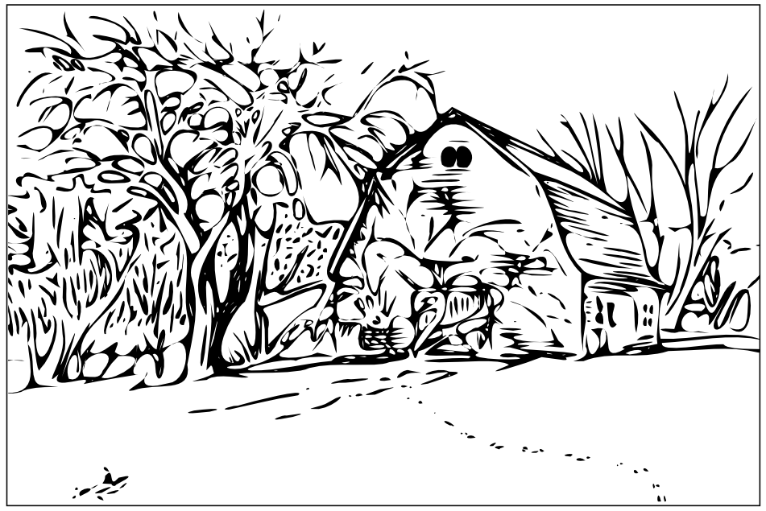

Don Blair | github | linkedin | twitter

I've worked with Public Lab, the University of Los Andes, the MIT Center for Civic Media, West Virginia State University, Walker Environmental Research, Emerson College, the Ocean Exploration Trust, and others to develop and assess free and open source prototypes, reference designs, and data workflows for water monitoring applications. Much of this work is archived here.

I've collaborated with FarmHack, The Food Project and Wolfes Neck Farm on several projects related to infrastructure and resource analysis for both urban and rural farming contexts. Some of that work is documented in the Pioneer Valley Open Science github repository.
Much of the general 'open science' software and hardware I develop -- for research laboratories, field research, and education -- is archived with Pioneer Valley Open Science, an open science research collective, here.